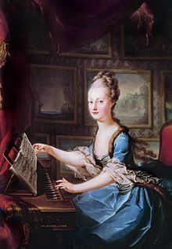
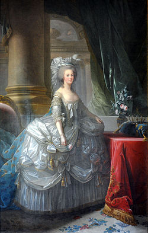

На овом сајту можете да упознате судбину Марије Антоанете. На основу мог матурског рада упознаћете
њен живот који многи осуђују.
И ако лоше представљена Марија није била толико негативна личност што можете да сазнате ако кренете путем њеног живота.
 